Jazzdor Festival Microsite
A digital identity and microsite for a contemporary jazz festival.
Project Overview
Jazzdor is a contemporary jazz festival known for its bold, expressive visual identity and improvisational spirit. As part of a five-person team, I helped translate that identity into a usable, accessible digital experience. I focused on UX structure, research, and interaction clarity so visitors could quickly find artists, locations, showtimes, and tickets.
Problem
Balancing a bold, expressive visual identity with clear information hierarchy and accessible interaction patterns for a diverse audience.
Outcome
A visually expressive yet structured microsite that keeps Jazzdor's energy intact while staying clear, accessible, and easy to use across content-heavy pages.
My Role
I focused on UX structure, research, and interaction clarity, working to keep the bold visual identity from overwhelming usability.
- Research: Studied audience behaviour and accessibility needs across festival microsites.
- Information architecture: Mapped how users browse lineups, schedules, and tickets.
- Interaction design: Built the navigation and hierarchy that keep bold visuals legible.
- Accessibility: Checked readability and contrast across expressive layouts.
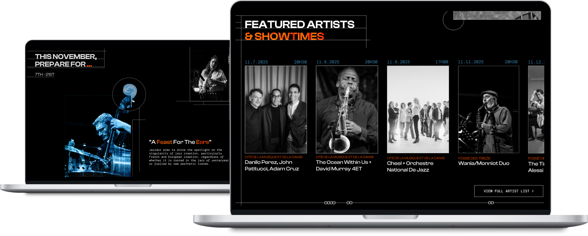
Research & Process
Rather than start with visuals, I looked at how people actually use festival websites, and where accessibility tends to break down in expressive designs.
The research showed:
- Users often feel overwhelmed by dense layouts and experimental visuals.
- Key information like showtimes and ticketing is frequently buried.
- Expressive typography and motion can hurt readability without structure.
- Users respond best to modular layouts with clear hierarchy.
These findings shaped the microsite's layout, navigation, and interaction design.
Design Scope
How might we express Jazzdor's bold visual identity while keeping the experience clear, accessible, and easy to navigate?
- Express the identity: Translate Jazzdor's improvisational energy into digital form through bold typography, colour, and layout.
- Maintain clarity: Let users quickly find artists, locations, showtimes, and tickets despite expressive visuals.
- Support accessibility: Preserve readability through contrast, spacing, and type scale, and reduce visual overload with structured layouts.
Visual Identity
Our team built the microsite's full visual identity. A dark background lets individual artists stand out, and geometric line work adds dimension while guiding users through the experience. Bright, complementary colours mark focus points and active states.
Content-heavy pages shift toward a structured, functional layout, while expressive, collage-like compositions appear only where they won't compete with clarity.
Fonts
Semibold
Medium
Clash Display (Bold, Semibold): A wide, round display typeface that draws attention and fills negative space. Used in headers and subheaders.
DM Mono (Regular, Medium): A structured, timeless body typeface that pairs with Clash Display's coolness.
Colours
A complementary colour palette stands out against the black background. Images are desaturated to mimic moments frozen in time, and shift to an orange or blue overlay on hover to indicate interactivity.
Logotype / Type Treatment
Drawing from the header typography, the Jazzdor logo replaces vowels with bright geometric shapes that mimic the original letterforms. Smaller ellipses outline each shape and add texture through layered noise.
Image Treatment
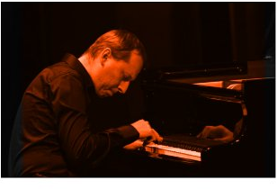
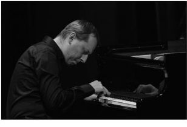
User Flow
Visitors move from a landing page introducing the festival into featured artists, city and venue information, and ticketing, with individual artist and location pages offering deeper detail through horizontal scroll.
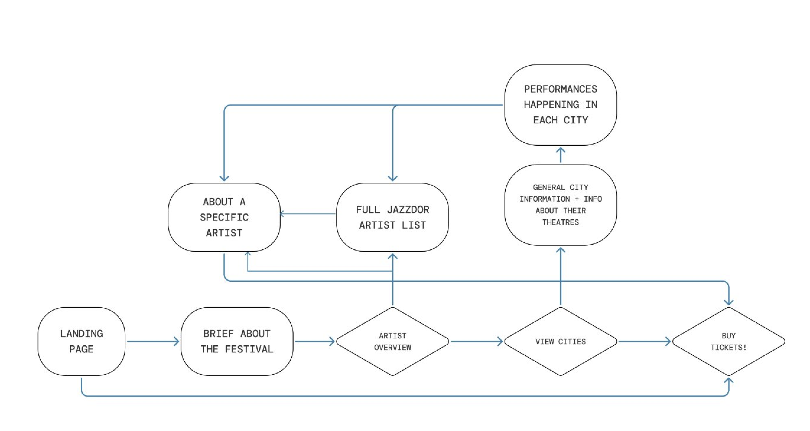
Sitemap
Eight core screens carry the experience from festival overview to individual artist and ticketing pages.
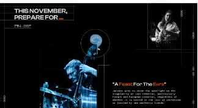
About the Festival
Sets expectations for what visitors will experience at Jazzdor Strasbourg.
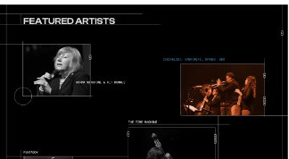
Featured Artists
Highlights select performing artists through interactive photos that lead to individual artist pages.
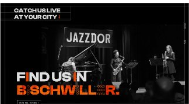
City Finder
Shares information on each participating city, with a button linking to in-depth details on venues and performances.
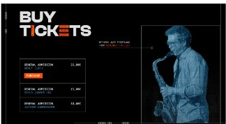
Tickets
Offers three ticketing options, accessible from the bottom of the home page.
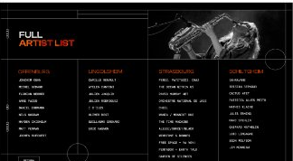
Full Artist List
Organizes artists by performance location, with hover and click interactions that lead to individual artist pages.
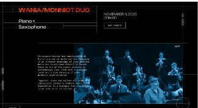
Individual Artist
A horizontal-scrolling page with details on the artist and their performance, linking through to ticketing.
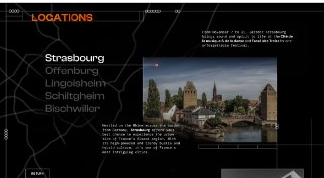
Locations
Provides city-specific performance information alongside a list of musicians playing there.
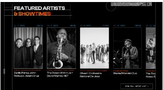
Showtimes
A horizontal-scrolling Featured Artists & Showtimes section guides visitors through musicians, locations, and times.
Result
The final microsite balances Jazzdor's expressive brand with a clear, accessible structure. Visitors can explore artists, cities, and showtimes without losing the festival's energy, and the modular layout keeps content-heavy pages easy to navigate.
Key Learnings
- Structuring expressive design: Used hierarchy and grids to keep bold visuals legible.
- Parallel process: Designed visual identity and UX together, not in sequence.
- Accessibility in bold interfaces: Maintained readability without dulling the festival's energy.
- Multiple entry points: Supported different user browsing behaviours throughout the site.